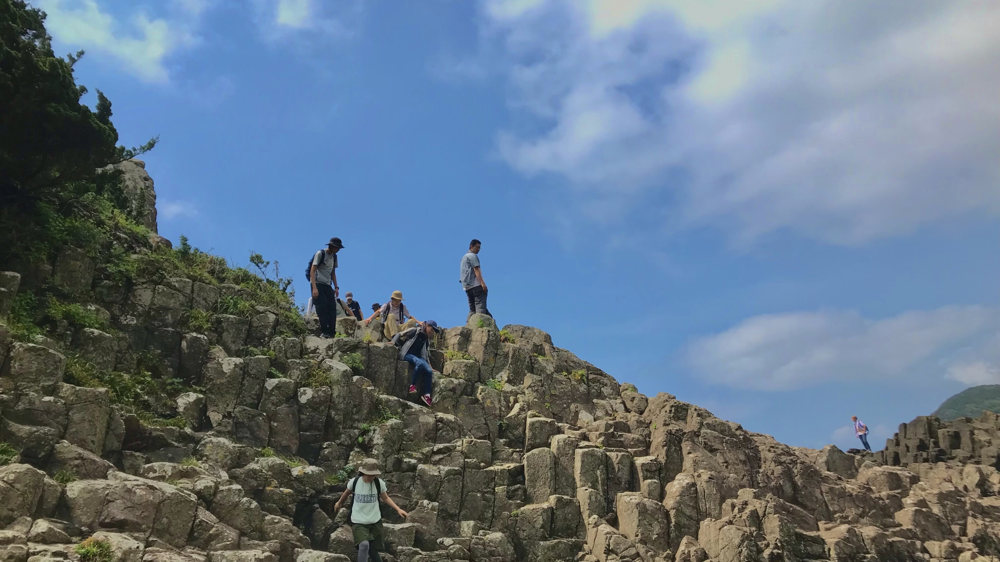
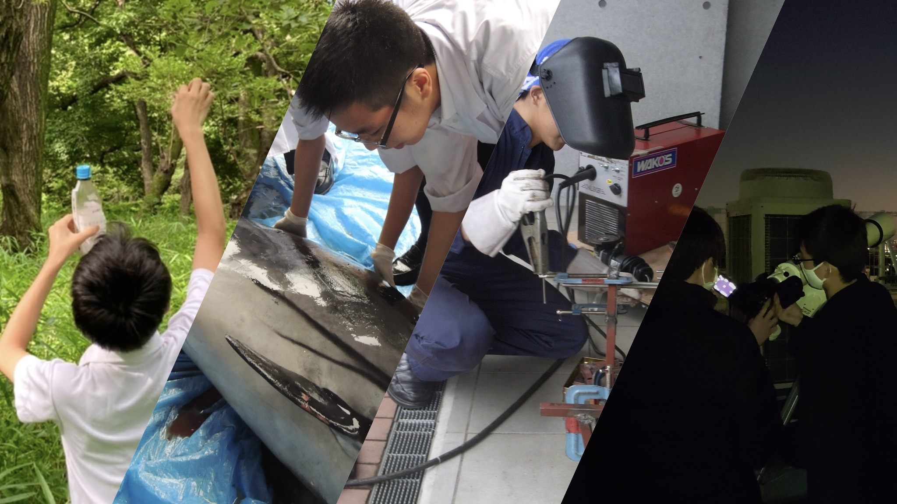

理科教育プログラム
新入部員には、観察対象の比較方法や工作における創意工夫、研究テーマの探し方など研究や観察の基礎を数ヶ月かけて先輩たちから教わります。一通り教わった後に、それぞれの希望する班に所属します
博物館見学会
博物館見学会は、国立科学博物館を中心に首都圏の博物館を訪ね、自然を探求する精神を学び、環境や生物の多様性について知る機会を得るとともに、先人の技術的探求を学び、今後の活動の基礎とすることを目的として実施しています。
自然観察会
自然観察会は、自然を愛する心を養い、環境や生物の多様性について学ぶ機会を得るとともに、周囲の自然物を深く観察し、考察する科学的な姿勢を養うことを目的として実施しています。
鎌倉・江の島自然観察会
鎌倉から江の島までの海岸沿いを歩き、関東における海浜生物の生態や相模湾の地学的な特徴について学ぶとともに、フイールドワークの基礎を身に付けます。また、江ノ島水族館で生物観察も行います。
夏合宿
夏合宿は、学校周辺では行うことの出来ない自然観察や昆虫採集、地学巡検、天体観測、工場見学、博物館見学などを通して、個人の理科的な能力の向上とグループでの調査能力の育成を目的として実施しています。また、夏合宿で学んだことはグループ毎に藍桐祭で展示発表します。
藍桐祭
日々の活動で得た学びや成果を理科が好きな方はもちろん、そうでない方にも分かりやすく満足していただけるような展示や解説を行っています。また、普段の活動により得た様々な気付きや知識以外にも夏合宿での経験を通じて研究したことを実物や実体験を添えてお伝えします。
理科部 藍桐祭特設ページ
プレゼン大会
プレゼン大会は、新入生のプレゼン能力の向上を目的として、各々の興味のある事柄について調べ学習をしてもらい、部内でプレゼンをします。この際、中学２年生が中心となりスライドの作り方や話し方の指導を行います。
科学体験教室SA
理科部では、本校の理科教員とともに東京都市大学 二子幼稚園の年中・年長組の園児を対象とした、科学体験教室を開催しています。この日、参加する理科部員は白衣を着て、全力で"理科に詳しいお兄さん、お姉さん"になります。幼稚園の皆さんに教えを伝えることを通して学ぶことや感じることがたくさんあります。

TOPに戻る
more →

各班ごとの活動
more →
部活動紹介ビデオ
more →
東京都市大学等々力中学校高等学校 理科部 Twitter
東京都市大学等々力中学校高等学校 HP
Copyright©TCU Todoroki Science Research Club , All Rights Reserved.